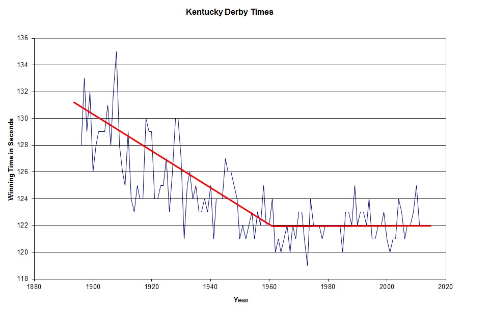

| Evolution in the News - May 2008 |
| by Do-While Jones |
The Kentucky Derby Limit still holds.
The theory of evolution depends upon the notion that selection can cause small changes to build up without limit over long periods of time. The problem with this notion is that it isn't true. There is a limit to how much a species can vary.
The breeding of racehorses is a good example. Artificial selection (which is a much more powerful version of natural selection) has been used for more than 100 years to produce the fastest possible horses. In 1999 we noticed that the winning times for the Kentucky Derby generally improved from 1896 up until 1960. Then they leveled off. Each May we update the web page version of that essay 1 with the name of the winning horse and winning time. Big Brown won this year with a time of 122 seconds.

The past few years have underscored the limit in another way. This year, Eight Bells suffered a serious injury during the race, and had to be destroyed on the spot. Racehorses are bred for the strongest muscles and the lightest bones. There comes a point where the light bones aren't strong enough to withstand the stress of the strong muscles. There seem to be more racehorse deaths in recent years due to broken bones. It is sad, but it should not be a surprise. It is simply a consequence of evolution running into a natural limit.
| Quick links to | |||
|---|---|---|---|
| Science Against Evolution Home Page |
Back issues of Disclosure (our newsletter) |
Web Site of the Month |
Topical Index |
Footnotes:
1
Disclosure, June 1999, "The Kentucky Derby Limit"